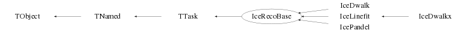

class IceRecoBase: public TTask
Class IceRecoBase TTask derived base class for the various IceCube reconstruction tasks. This base class provides a generic facility to specify reconstruction parameters which are common to various IceCube reconstruction tasks. As such, each IceCube reconstruction task is expected to be derived from this base class and should provide the code for the "Exec()" member function, which performs the actual reconstruction method. The "Exec()" memberfunction of this base class may serve as a template. Special data members : fEvt : Pointer to the IceEvent structure fParams : Device to contain info on the used reconstruction parameters fFirst : Flag (if set to 1) denoting the very first invokation of the processor fUseNames : Array with the names of the tracks to be used as input for the reconstruction FuseNtk : Array with the maximum number of tracks of each name to be used If needed, additional parameters can of course be specified in the derived class. These additional parameters have then to be added to the "fParams" device in order to be introduced into the event structure for further reference. Please refer to one of the "Set" member functions for an example. The default values set in this base class will not impose any restrictions on the data to be processed. Note that in this base class only the parameter values are set and that no selection is performed on the data. The latter has to be implemented in the actual reconstruction code of the derived class by making use of the parameter variables defined here. In a derived class the default settings have to be specified by invokation of the corresponding "Set" functions, via which also automatically the fParams device is filled with data. Note that the default constructor of this base class sets the values of the various reconstruction parameters directly via the data members. This implies that the default constructor of this base class results in an empty fParams device. This allows to trace omitted parameter settings in a derived class. --- Author: Nick van Eijndhoven 18-jan-2013 IIHE-VUB, Brussels - Modified: NvE $Date: 2013-03-15 16:22:45 +0100 (Fri, 15 Mar 2013) $ IIHE-VUB
Function Members (Methods)
public:
| IceRecoBase(const IceRecoBase&) | |
| IceRecoBase(const char* name = "IceRecoBase", const char* title = "Base class for IceCube reconstruction tasks") | |
| virtual | ~IceRecoBase() |
| virtual void | TTask::Abort()MENU |
| void | TObject::AbstractMethod(const char* method) const |
| virtual void | TTask::Add(TTask* task) |
| virtual void | TObject::AppendPad(Option_t* option = "") |
| virtual void | TTask::Browse(TBrowser* b) |
| static TClass* | Class() |
| virtual const char* | TObject::ClassName() const |
| virtual void | TTask::CleanTasks() |
| virtual void | TTask::Clear(Option_t* option = "") |
| virtual TObject* | TNamed::Clone(const char* newname = "") const |
| virtual Int_t | TNamed::Compare(const TObject* obj) const |
| virtual void | TTask::Continue()MENU |
| virtual void | TNamed::Copy(TObject& named) const |
| virtual void | TObject::Delete(Option_t* option = "")MENU |
| virtual Int_t | TObject::DistancetoPrimitive(Int_t px, Int_t py) |
| virtual void | TObject::Draw(Option_t* option = "") |
| virtual void | TObject::DrawClass() constMENU |
| virtual TObject* | TObject::DrawClone(Option_t* option = "") constMENU |
| virtual void | TObject::Dump() constMENU |
| virtual void | TObject::Error(const char* method, const char* msgfmt) const |
| virtual void | Exec(Option_t* opt) |
| virtual void | TObject::Execute(const char* method, const char* params, Int_t* error = 0) |
| virtual void | TObject::Execute(TMethod* method, TObjArray* params, Int_t* error = 0) |
| virtual void | TObject::ExecuteEvent(Int_t event, Int_t px, Int_t py) |
| virtual void | TTask::ExecuteTask(Option_t* option = "0")MENU |
| virtual void | TTask::ExecuteTasks(Option_t* option) |
| virtual void | TObject::Fatal(const char* method, const char* msgfmt) const |
| virtual void | TNamed::FillBuffer(char*& buffer) |
| virtual TObject* | TObject::FindObject(const char* name) const |
| virtual TObject* | TObject::FindObject(const TObject* obj) const |
| Int_t | TTask::GetBreakin() const |
| Int_t | TTask::GetBreakout() const |
| virtual Option_t* | TObject::GetDrawOption() const |
| static Long_t | TObject::GetDtorOnly() |
| virtual const char* | TObject::GetIconName() const |
| TList* | TTask::GetListOfTasks() const |
| virtual const char* | TNamed::GetName() const |
| virtual char* | TObject::GetObjectInfo(Int_t px, Int_t py) const |
| static Bool_t | TObject::GetObjectStat() |
| virtual Option_t* | TObject::GetOption() const |
| virtual const char* | TNamed::GetTitle() const |
| virtual UInt_t | TObject::GetUniqueID() const |
| virtual Bool_t | TObject::HandleTimer(TTimer* timer) |
| virtual ULong_t | TNamed::Hash() const |
| virtual void | TObject::Info(const char* method, const char* msgfmt) const |
| virtual Bool_t | TObject::InheritsFrom(const char* classname) const |
| virtual Bool_t | TObject::InheritsFrom(const TClass* cl) const |
| virtual void | TObject::Inspect() constMENU |
| void | TObject::InvertBit(UInt_t f) |
| virtual TClass* | IsA() const |
| Bool_t | TTask::IsActive() const |
| virtual Bool_t | TObject::IsEqual(const TObject* obj) const |
| virtual Bool_t | TTask::IsFolder() const |
| Bool_t | TObject::IsOnHeap() const |
| virtual Bool_t | TNamed::IsSortable() const |
| Bool_t | TObject::IsZombie() const |
| virtual void | TTask::ls(Option_t* option = "*") constMENU |
| void | TObject::MayNotUse(const char* method) const |
| virtual Bool_t | TObject::Notify() |
| void | TObject::Obsolete(const char* method, const char* asOfVers, const char* removedFromVers) const |
| static void | TObject::operator delete(void* ptr) |
| static void | TObject::operator delete(void* ptr, void* vp) |
| static void | TObject::operator delete[](void* ptr) |
| static void | TObject::operator delete[](void* ptr, void* vp) |
| void* | TObject::operator new(size_t sz) |
| void* | TObject::operator new(size_t sz, void* vp) |
| void* | TObject::operator new[](size_t sz) |
| void* | TObject::operator new[](size_t sz, void* vp) |
| IceRecoBase& | operator=(const IceRecoBase&) |
| virtual void | TObject::Paint(Option_t* option = "") |
| virtual void | TObject::Pop() |
| virtual void | TNamed::Print(Option_t* option = "") const |
| virtual Int_t | TObject::Read(const char* name) |
| virtual void | TObject::RecursiveRemove(TObject* obj) |
| void | TObject::ResetBit(UInt_t f) |
| virtual void | TObject::SaveAs(const char* filename = "", Option_t* option = "") constMENU |
| virtual void | TObject::SavePrimitive(ostream& out, Option_t* option = "") |
| void | SetAbsorptionLength(Float_t lambda, TString s) |
| void | TTask::SetActive(Bool_t active = kTRUE)TOGGLE |
| void | TObject::SetBit(UInt_t f) |
| void | TObject::SetBit(UInt_t f, Bool_t set) |
| void | TTask::SetBreakin(Int_t breakin = 1)TOGGLE |
| void | TTask::SetBreakout(Int_t breakout = 1)TOGGLE |
| void | SetCharge(Float_t charge) |
| void | SetCleaned(Int_t flag, TString s) |
| virtual void | TObject::SetDrawOption(Option_t* option = "")MENU |
| static void | TObject::SetDtorOnly(void* obj) |
| void | SetFlipAngles(Float_t thetatrk, Float_t thetahits) |
| void | SetMaxHits(Int_t nmax, TString s) |
| void | SetMaxMod(Int_t nmax, TString s) |
| void | SetMinAhits(Int_t nmin, TString s) |
| void | SetMinAmods(Int_t nmin, TString s) |
| void | SetMinMod(Int_t nmin, TString s) |
| virtual void | TNamed::SetName(const char* name)MENU |
| virtual void | TNamed::SetNameTitle(const char* name, const char* title) |
| static void | TObject::SetObjectStat(Bool_t stat) |
| void | SetScatteringLength(Float_t lambda, TString s) |
| void | SetSingleHit(Int_t ndoms, TString s, Int_t ndoms1 = 0) |
| void | SetSLChitUsage(Int_t flag, TString s) |
| void | SetTimeJitter(Float_t sigma, TString s) |
| virtual void | TNamed::SetTitle(const char* title = "")MENU |
| void | SetTrackName(TString s) |
| virtual void | TObject::SetUniqueID(UInt_t uid) |
| void | SetVgroupUsage(Int_t flag, TString s) |
| virtual void | ShowMembers(TMemberInspector&) |
| virtual Int_t | TNamed::Sizeof() const |
| virtual void | Streamer(TBuffer&) |
| void | StreamerNVirtual(TBuffer& ClassDef_StreamerNVirtual_b) |
| virtual void | TObject::SysError(const char* method, const char* msgfmt) const |
| Bool_t | TObject::TestBit(UInt_t f) const |
| Int_t | TObject::TestBits(UInt_t f) const |
| virtual void | TObject::UseCurrentStyle() |
| void | UseTracks(TString classname, Int_t n = -1) |
| virtual void | TObject::Warning(const char* method, const char* msgfmt) const |
| virtual Int_t | TObject::Write(const char* name = 0, Int_t option = 0, Int_t bufsize = 0) |
| virtual Int_t | TObject::Write(const char* name = 0, Int_t option = 0, Int_t bufsize = 0) const |
protected:
| virtual void | TObject::DoError(int level, const char* location, const char* fmt, va_list va) const |
| virtual void | FlipTrack(NcTrack* t) const |
| void | TObject::MakeZombie() |
Data Members
public:
| enum TObject::EStatusBits { | kCanDelete | |
| kMustCleanup | ||
| kObjInCanvas | ||
| kIsReferenced | ||
| kHasUUID | ||
| kCannotPick | ||
| kNoContextMenu | ||
| kInvalidObject | ||
| }; | ||
| enum TObject::[unnamed] { | kIsOnHeap | |
| kNotDeleted | ||
| kZombie | ||
| kBitMask | ||
| kSingleKey | ||
| kOverwrite | ||
| kWriteDelete | ||
| }; |
protected:
| Bool_t | TTask::fActive | true if task is active |
| Int_t | TTask::fBreakin | =1 if a break point set at task extry |
| Int_t | TTask::fBreakout | =1 if a break point set at task exit |
| Float_t | fCharge | User defined charge of the produced first guess tracks |
| Int_t | fCleanA | Amanda flag to indicate usage of only cleaned hits |
| Int_t | fCleanDC | DeepCore flag to indicate usage of only cleaned hits |
| Int_t | fCleanI | InIce flag to indicate usage of only cleaned hits |
| Int_t | fCleanIC | Standard IceCube InIce flag to indicate usage of only cleaned hits |
| IceEvent* | fEvt | Pointer to the current event |
| Int_t | fFirst | Flag to denote first invokation of the processor |
| Bool_t | TTask::fHasExecuted | True if task has executed |
| Float_t | fLabsA | Average photon absorption length (in meter) for Amanda OMs |
| Float_t | fLabsDL | Average photon absorption length (in meter) for InIce DOMs in the Dust Layer |
| Float_t | fLabsLD | Average photon absorption length (in meter) for InIce DOMs in the Lower Detector below the dust layer |
| Float_t | fLabsUD | Average photon absorption length (in meter) for InIce DOMs in the Upper Detector above the dust layer |
| Float_t | fLambdaA | Average photon scattering length (in meter) for Amanda OMs |
| Float_t | fLambdaDL | Average photon scattering length (in meter) for InIce DOMs in the Dust Layer |
| Float_t | fLambdaLD | Average photon scattering length (in meter) for InIce DOMs in the Lower Detector below the dust layer |
| Float_t | fLambdaUD | Average photon scattering length (in meter) for InIce DOMs in the Upper Detector above the dust layer |
| Int_t | fMaxhitsA | The maximum number of good hits per Amanda OM to be processed |
| Int_t | fMaxhitsDC | The maximum number of good hits per DeepCore DOM to be processed |
| Int_t | fMaxhitsI | The maximum number of good hits per InIce DOM to be processed |
| Int_t | fMaxhitsIC | The maximum number of good hits per standard IceCube InIce DOM to be processed |
| Int_t | fMaxmodA | The max. number of good fired Amanda OMs for events to get processed |
| Int_t | fMaxmodDC | The max. number of good fired DeepCore DOMs for events to get processed |
| Int_t | fMaxmodI | The max. number of good fired InIce DOMs for events to get processed |
| Int_t | fMaxmodIC | The max. number of good fired standard IceCube InIce DOMs for events to get processed |
| Int_t | fMinahitsA | The minimum number of associated hits to produce an Amanda reconstructed track |
| Int_t | fMinahitsDC | The minimum number of associated hits to produce a DeepCore (DC) reconstructed track |
| Int_t | fMinahitsI | The minimum number of associated hits to produce a hybrid InIce (I) reconstructed track |
| Int_t | fMinahitsIC | The minimum number of associated hits to produce a standard IceCube (IC) reconstructed track |
| Int_t | fMinamodsA | The minimum number of associated OMs to produce an Amanda reconstructed track |
| Int_t | fMinamodsDC | The minimum number of associated DOMs to produce a DeepCore (DC) reconstructed track |
| Int_t | fMinamodsI | The minimum number of associated DOMs to produce a hybrid InIce (I) reconstructed track |
| Int_t | fMinamodsIC | The minimum number of associated DOMs to produce a standard IceCube (IC) reconstructed track |
| Int_t | fMinmodA | The min. number of good fired Amanda OMs for events to get processed |
| Int_t | fMinmodDC | The min. number of good fired DeepCore DOMs for events to get processed |
| Int_t | fMinmodI | The min. number of good fired InIce DOMs for events to get processed |
| Int_t | fMinmodIC | The min. number of good fired standard IceCube InIce DOMs for events to get processed |
| TString | TNamed::fName | object identifier |
| TString | TTask::fOption | Option specified in ExecuteTask |
| NcDevice | fParams | Device to store the parameters for this processor |
| Int_t | fSingle1A | Minimum number of good firing Amanda OMs on a single string at which only first hits will be used |
| Int_t | fSingle1DC | Minimum number of good firing DeepCore DOMs on a single string at which only first hits will be used |
| Int_t | fSingle1I | Minimum number of good firing InIce DOMs on a single string at which only first hits will be used |
| Int_t | fSingle1IC | Minimum number of good firing standard IceCube InIce DOMs on a single string at which only first hits will be used |
| Int_t | fSingleA | Minimum number of good firing Amanda OMs at which only first hits will be used |
| Int_t | fSingleDC | Minimum number of good firing DeepCore DOMs at which only first hits will be used |
| Int_t | fSingleI | Minimum number of good firing InIce DOMs at which only first hits will be used |
| Int_t | fSingleIC | Minimum number of good firing standard IceCube InIce DOMs at which only first hits will be used |
| Int_t | fSlcDC | DeepCore flag to indicate usage of SLC hits |
| Int_t | fSlcI | InIce flag to indicate usage of SLC hits |
| Int_t | fSlcIC | Standard IceCube InIce flag to indicate usage of SLC hits |
| TList* | TTask::fTasks | List of Tasks |
| Float_t | fThetahits | Hit path polar angle threshold (in degrees) for track direction flipping |
| Float_t | fThetatrk | Track polar angle threshold (in degrees) for track direction flipping |
| TString | TNamed::fTitle | object title |
| TString | fTrackname | The name identifier for the produced first guess tracks |
| Float_t | fTsigmaA | PMT jitter (in ns) for Amanda OMs |
| Float_t | fTsigmaDC | PMT jitter (in ns) for DeepCore DOMs |
| Float_t | fTsigmaIC | PMT jitter (in ns) for standard IceCube DOMs |
| TObjArray* | fUseNames | The first guess classnames to be used |
| TArrayI* | fUseNtk | The max. numbers of the various first guess tracks to be used |
| Int_t | fVgroupA | Amanda flag to indicate usage of distinct phase and group velocities |
| Int_t | fVgroupDC | DeepCore flag to indicate usage of distinct phase and group velocities |
| Int_t | fVgroupI | InIce flag to indicate usage of distinct phase and group velocities |
| Int_t | fVgroupIC | Standard IceCube InIce flag to indicate usage of distinct phase and group velocities |
| static TTask* | TTask::fgBeginTask | pointer to task initiator |
| static TTask* | TTask::fgBreakPoint | pointer to current break point |
Class Charts
{kind=link}
{kind=link}
{kind=link}
{kind=link}

Function documentation
IceRecoBase(const char* name = "IceRecoBase", const char* title = "Base class for IceCube reconstruction tasks")
Default constructor.
void SetCleaned(Int_t flag, TString s)
Set flag to select usage of only cleaned hits or all hits.
flag = 0 : All hits are used
1 : Only cleaned hits are used
For default values please refer to the general documentation of this class.
The input argument "s" allows specification for the various reconstructions.
s = "A" --> Amanda reconstruction
"I" --> Hybrid InIce reconstruction
"IC" --> Standard IceCube reconstruction
"DC" --> DeepCore reconstruction
void SetMaxMod(Int_t nmax, TString s)
Set the maximum number of good (D)OMs that may have fired in order to process this event. This allows suppression of processing (high-energy) cascade events with e.g. track reconstruction to prevent waisting cpu time for cases in which tracking doesn't make sense anyhow. Furthermore it allows selection of low multiplicity events for processing. For default values please refer to the general documentation of this class. See also the memberfunction SetMinMod(). The input argument "s" allows for detector specification. s = "A" --> Amanda OMs "I" --> InIce DOMs "IC" --> Standard IceCube InIce DOMs "DC" --> DeepCore DOMs
void SetMinMod(Int_t nmin, TString s)
Set the minimum number of good (D)OMs that must have fired in order to process this event. This allows selection of a minimal multiplicity for events to be processed. For default values please refer to the general documentation of this class. See also the memberfunction SetMaxMod(). The input argument "s" allows for detector specification. s = "A" --> Amanda OMs "I" --> InIce DOMs "IC" --> Standard IceCube InIce DOMs "DC" --> DeepCore DOMs
void SetMaxHits(Int_t nmax, TString s)
Set the maximum number of good hits per (D)OM to be processed.
Special values :
nmax = 0 : No maximum limit set; all good hits will be processed
< 0 : No hits will be processed
In case the user selects a maximum number of good hits per module, all the
hits of each Amanda OM will be ordered w.r.t. increasing hit time (LE),
whereas the hits of each InIce DOM will be ordered w.r.t. decreasing amplitude (ADC).
This allows selection of processing e.g. only the first c.q. largest hits etc...
For default values please refer to the general documentation of this class.
The input argument "s" allows for detector specification.
s = "A" --> Amanda OMs
"I" --> InIce DOMs
"IC" --> Standard IceCube InIce DOMs
"DC" --> DeepCore DOMs
void SetSingleHit(Int_t ndoms, TString s, Int_t ndoms1 = 0)
Set minimum number of good firing (D)OMs at which only the first hits (for instance after ordering the hits per (D)OM w.r.t. decreasing amplitude) will be used for reconstruction. This will allow to prevent very long processing time for large events. For default values please refer to the general documentation of this class. ndoms : The minimum of good firing (D)OMs for the whole event ndoms1 : The minimum of good firing (D)OMs on a single string The input argument "s" allows for detector specification. s = "A" --> Amanda OMs "IC" --> Standard IceCube DOMs "DC" --> DeepCore DOMs "I" --> InIce (IC+DC) DOMs Note : Setting ndoms=0 and ndoms1=0 implies no automatic switching to single hit processing. The default is ndoms1=0 for backward compatibility.
void SetMinAhits(Int_t nmin, TString s)
Set the minimum number of associated hits to produce a reconstruction result like for instance a reconstructed track. For default values please refer to the general documentation of this class. The input argument "s" allows specification for the various reconstructions. s = "A" --> Amanda reconstruction "I" --> Hybrid InIce reconstruction "IC" --> Standard IceCube reconstruction "DC" --> DeepCore reconstruction
void SetMinAmods(Int_t nmin, TString s)
Set the minimum number of associated (D)OMs to produce a reconstruction result like for instance a reconstructed track. For default values please refer to the general documentation of this class. The input argument "s" allows specification for the various reconstructions. s = "A" --> Amanda reconstruction "I" --> Hybrid InIce reconstruction "IC" --> Standard IceCube reconstruction "DC" --> DeepCore reconstruction
void SetSLChitUsage(Int_t flag, TString s)
(De)activate the usage of Soft Local Coincidence hits for reconstruction.
flag = 0 : SLC hits are not used for reconstruction
= 1 : SLC hits are used for reconstruction
The input argument "s" allows for detector specification.
s = "I" --> InIce DOMs
"IC" --> Standard IceCube InIce DOMs
"DC" --> DeepCore DOMs
For default values please refer to the general documentation of this class.
void SetFlipAngles(Float_t thetatrk, Float_t thetahits)
Set the angular thresholds (in degrees) for the track (thetatrk) and hit path (thetahits) polar angles for the track direction flipping. The polar angle (theta) is defined such that theta=0 corresponds to a straight upgoing track. In case a track has theta<thetatrk and the (time ordered) hit pattern reflects a direction with theta>thetahits, the direction of the track will be reversed by invokation of the memberfunction FlipTrack(). This allows an additional reduction of the background for upgoing tracks due to mis-reconstructed downgoing muons. However, this may result in a (significant) loss of upgoing signal events. Note : The flipping of the track direction may be de-activated by setting thetatrk<0 and/or thetahits>180. For default values please refer to the general documentation of this class.
void SetScatteringLength(Float_t lambda, TString s)
Set average photon scattering length in meter. For default values please refer to the general documentation of this class. The input argument "s" allows for detector specification. s = "A" --> Amanda OMs "UD" --> InIce DOMs in the Upper Detector above the dust layer "DL" --> InIce DOMs in the Dust Layer "LD" --> InIce DOMs in the Lower Detector below the dust layer
void SetAbsorptionLength(Float_t lambda, TString s)
Set average photon absorption length in meter. For default values please refer to the general documentation of this class. The input argument "s" allows for detector specification. s = "A" --> Amanda OMs "UD" --> InIce DOMs in the Upper Detector above the dust layer "DL" --> InIce DOMs in the Dust Layer "LD" --> InIce DOMs in the Lower Detector below the dust layer
void SetTimeJitter(Float_t sigma, TString s)
Set the time jitter of the various PMTs. The input argument "sigma" represents the standard deviation in ns. The input argument "s" allows for detector specification. s = "A" --> Amanda OMs "IC" --> Standard IceCube DOMs "DC" --> DeepCore DOMs
void SetVgroupUsage(Int_t flag, TString s)
(De)activate the distinction between v_phase and v_group of the Cherenkov light.
flag = 0 : No distinction between v_phase and v_group
= 1 : Separate treatment of v_phase and v_group
The input argument "s" allows for detector specification.
s = "A" --> Amanda reconstruction
"IC" --> Standard IceCube optimised reconstruction
"DC" --> DeepCore optimised reconstruction
"I" --> InIce (IC+DC hybrid) optimised reconstruction
By default the distinction between v_phase and v_group is activated
in the constructor of this class.
void SetTrackName(TString s)
Set (alternative) name identifier for the produced reconstructed tracks. This allows unique identification of (newly) produced reco tracks in case of re-processing of existing data with different criteria. By default the produced reco tracks have the name of the class by which they were produced.
void SetCharge(Float_t charge)
Set user defined charge for the produced reconstructed tracks. This allows identification of these tracks on color displays. By default the produced reco tracks have charge=0 which is set in the constructor of this class.
void UseTracks(TString classname, Int_t n = -1)
Specification of the input tracks to be used in a track based reconstruction. classname : Specifies the input track trackname (e.g. "IceDwalkIC"). n : Specifies the max. number of these tracks to be used Note : n<0 will use all the existing tracks of the specified classname The default is n=-1. Consecutive invokations of this memberfunction with different classnames will result in an incremental effect. Example : UseTracks("IceDwalkIC",5); UseTracks("IceLinefit",2); UseTracks("IceDwalkDC"); This will use the first 5 IceDwalkIC, the first 2 IceLinefit and all the IceDwalkDC tracks which are encountered in the event structure.
void FlipTrack(NcTrack* t) const
Reverse the direction of the track "t" in case a the track has a polar angle theta<thetatrk and the (time ordered) hit pattern reflects a direction with polar angle theta>thetahits. This allows an additional reduction of the background for upgoing tracks due to mis-reconstructed downgoing muons. The polar angle thresholds "thetatrk" and "thetahits" may be set by the user via the member function SetFlipAngles(). For default values please refer to the general documentation of this class. Note : The flipping of the track direction may be de-activated by setting thetatrk<0 and/or thetahits>180.
IceRecoBase(const char* name = "IceRecoBase", const char* title = "Base class for IceCube reconstruction tasks")